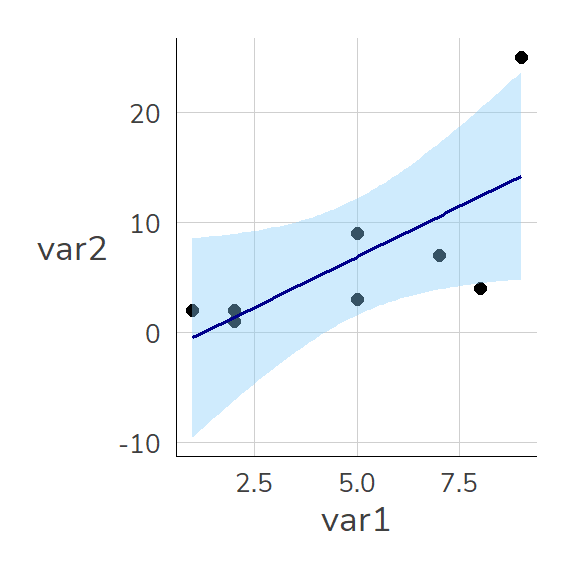
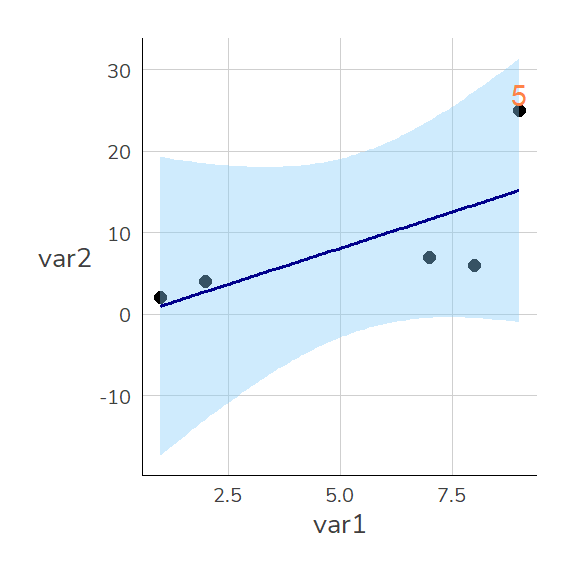
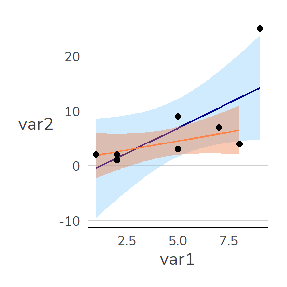
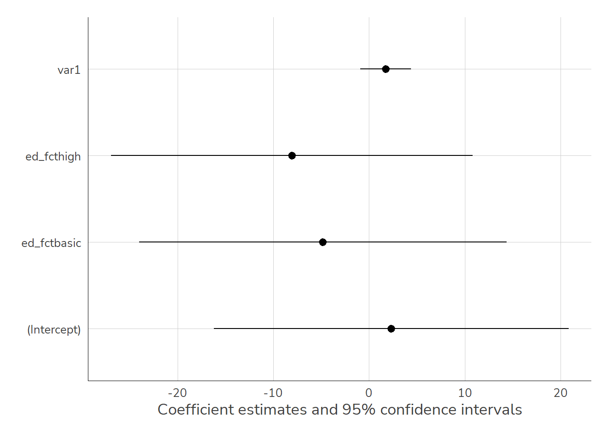
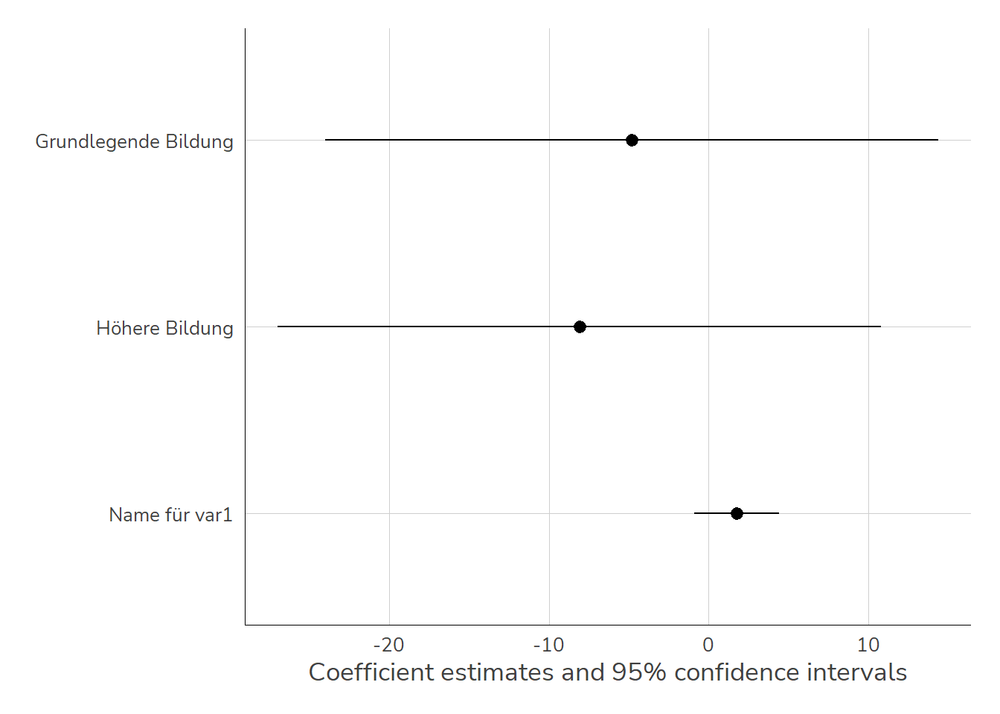
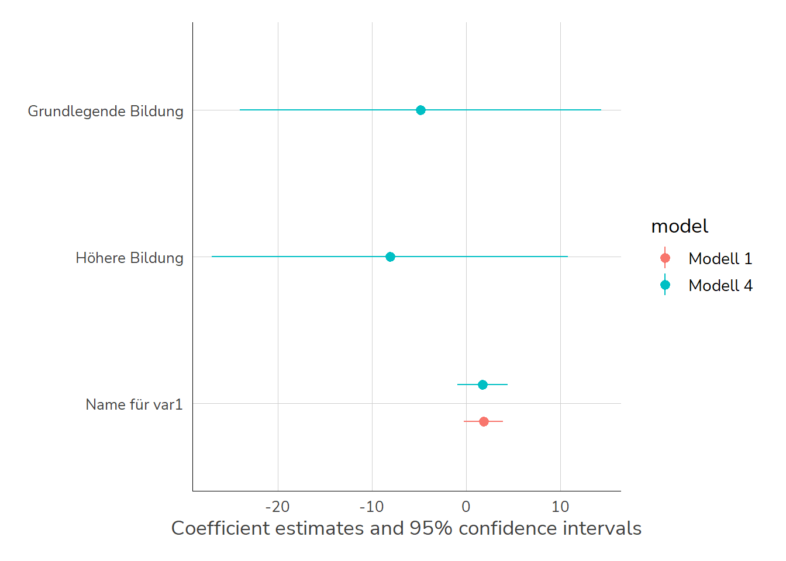
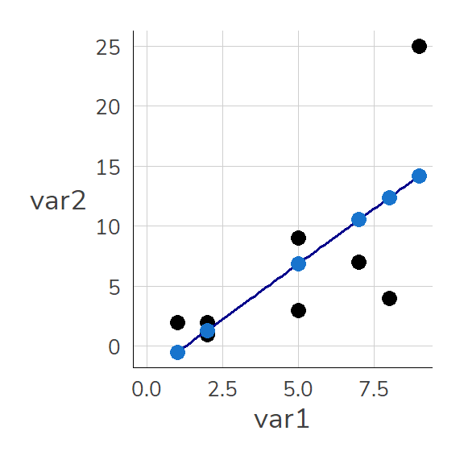
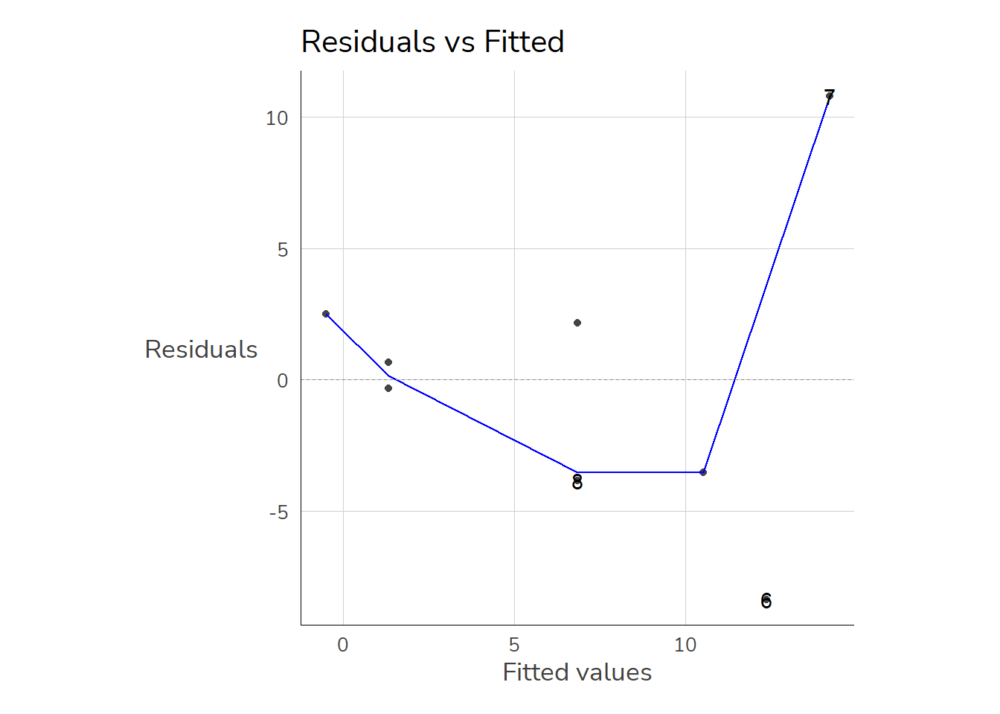

Zum Einstieg betrachten wir zunächst einen (fiktiven) Datensatz mit lediglich fünf Fällen. Mit dem data.frame Befehl können wir einen Datensatz erstellen. Unserer hat zunächst lediglich zwei Variablen: var1 und var2
Regressionsmodelle in R lassen sich mit lm() erstellen. Hier geben wir das Merkmal an, dass auf der y-Achse liegt (die abhängige Variable) und nach einer ~ das Merkmal für die x-Achse (unabhängige Variable). Die Interpretation des Ergebnisses wird uns die kommenden Wochen beschäftigen.
Der Wert unter var1 gibt an, um wieviel sich die Gerade pro “Schritt nach rechts” nach oben/unten verändert. Die Gerade steigt also pro Einheit von var1 um 1.8389662. Die Ergebnisse können wir unter m1 ablegen:
m1 <-lm(var2~ var1, data = dat1)
Mit summary() bekommen wir dann eine Regressionstabelle:
summary(m1)
Call:
lm(formula = var2 ~ var1, data = dat1)
Residuals:
Min 1Q Median 3Q Max
-8.372 -3.613 0.162 2.234 10.789
Coefficients:
Estimate Std. Error t value Pr(>|t|)
(Intercept) -2.3400 4.3454 -0.538 0.6096
var1 1.8390 0.7727 2.380 0.0548 .
---
Signif. codes: 0 '***' 0.001 '**' 0.01 '*' 0.05 '.' 0.1 ' ' 1
Residual standard error: 6.127 on 6 degrees of freedom
Multiple R-squared: 0.4856, Adjusted R-squared: 0.3999
F-statistic: 5.664 on 1 and 6 DF, p-value: 0.05477
Wie schon bei den Zusammenhangsmaßen können wir auch hier die einzelnen Werte mit View() ansehen:
Besonders hilfreich ist $coefficients:
m1$coefficients
(Intercept) var1
-2.339960 1.838966
summary(m1)$coefficients
Estimate Std. Error t value Pr(>|t|)
(Intercept) -2.339960 4.3453801 -0.5384938 0.60961706
var1 1.838966 0.7727028 2.3799139 0.05477457
8.2 Regressionsmodelle visualisieren
Mit geom_smooth(method = "lm") können wir Regressionsgeraden auch in {ggplot2} darstellen: Unser Modell mit var1 und var2 können wir so darstellen:
library(ggplot2)ggplot(dat1, aes(x = var1, y = var2)) +geom_point(size =2) +geom_smooth(method ="lm", color ="darkblue" , fill ="lightskyblue", size = .65)

Hier scheinen wir einen Ausreißer zu haben. In unserem übersichtlichen Datensatz ist der schnell gefunden. In größeren Datensätzen hilft uns geom_text():
ggplot(dat1, aes(x = var1, y = var2)) +geom_point(size =2) +geom_smooth(method ="lm", color ="darkblue" , fill ="lightskyblue", size = .65) +geom_text(data = dat1 %>%filter(var2 >20), aes(y = var2+3, label = id), color ="sienna1")

Wir können nämlich einzelne geom_ auch nur für ein Subset angeben - dazu vergeben wir data = neu (übernehmen also nicht die Auswahl aus dem Haupt-Befehl ggplot()) und setzen darin einen filter(). Außerdem verschieben wir mit var2+3 das Label etwas über den Punkt.
Wenn wir jetzt das Modell nochmal berechnen wollen, haben wir zwei Möglichkeiten:
8.3.1 Neuen data.frame erstellen
Wir können in R mehrere data.frame-Objekte im Speicher halten. Also können wir leicht einen neuen data.frame erstellen, der nur die Beobachtungen mit var2 < 20 enthält und diesen dann für unseren lm()-Befehl verwenden:
dat1_u20 <- dat1 %>%filter(var2<20)m2a <-lm(var2~ var1, data = dat1_u20)summary(m2a)
Call:
lm(formula = var2 ~ var1, data = dat1_u20)
Residuals:
1 2 3 4 5 6 7
-0.4737 0.1941 -1.4737 4.5230 1.1875 -2.4803 -1.4770
Coefficients:
Estimate Std. Error t value Pr(>|t|)
(Intercept) 1.1382 1.9217 0.592 0.579
var1 0.6678 0.3877 1.722 0.146
Residual standard error: 2.555 on 5 degrees of freedom
Multiple R-squared: 0.3724, Adjusted R-squared: 0.2469
F-statistic: 2.967 on 1 and 5 DF, p-value: 0.1456
8.3.2 Direkt in lm() filtern
Wir können filter()-Befehl auch direkt in das data=-Argument von lm() bauen:
m2b <-lm(var2~ var1, data = dat1 %>%filter(var2<20))summary(m2b)
Call:
lm(formula = var2 ~ var1, data = dat1 %>% filter(var2 < 20))
Residuals:
1 2 3 4 5 6 7
-0.4737 0.1941 -1.4737 4.5230 1.1875 -2.4803 -1.4770
Coefficients:
Estimate Std. Error t value Pr(>|t|)
(Intercept) 1.1382 1.9217 0.592 0.579
var1 0.6678 0.3877 1.722 0.146
Residual standard error: 2.555 on 5 degrees of freedom
Multiple R-squared: 0.3724, Adjusted R-squared: 0.2469
F-statistic: 2.967 on 1 and 5 DF, p-value: 0.1456
…übrigens: wir können auch in geom_smooth() filtern:
ggplot(dat1, aes(x = var1, y = var2)) +geom_smooth(method ="lm", color ="darkblue" , fill ="lightskyblue", size = .65) +geom_smooth(data = dat1 %>%filter(var2<20),method ="lm", color ="sienna1" , fill ="sienna2", size = .65) +geom_point(size =2)

8.4 Regressionstabellen
Wenn wir diese verschiedenen Modelle jetzt vergleichen möchten, bietet sich eine Tabelle an.
Es gibt zahlreiche Alternativen zur Erstellung von Regressionstabellen, mein persönlicher Favorit ist modelsummary() aus dem gleichnamigen Paket {modelsummary}. Es kommt mit (nahezu) allen Modellarten zurecht und bietet darüber hinaus eine breite Palette an (u.a. auch Word-Output - dazu später mehr) und auch Koeffizientenplots (auch dazu kommen wir noch). Außerdem ist die Dokumentation.
Wir werden uns noch ein bisschen ausführlicher mit den Anpassungsmöglichkeiten für {modelsummary} befassen, hier nur schon mal zwei zentrale Optionen:
mit stars = T können wir uns die Signifikanz mit den gebräuchlichen Sternchen-Codes anzeigen lassen (*: p < .05 usw.)
mit gof_omit = "IC|RM|Log" können wir die Goodness of Fit Statistiken ausblenden die IC, RM oder Log im Namen haben (also AIC, BIC, RMSE und die LogLikelihood)
Natürlich können wir auch kategoriale unabhängige Variablen in unser Modell mit aufnehmen. Dazu müssen wir aber entsprechende Variable als factor definieren - und R so mitteilen, dass die Zahlenwerte nicht numerisch zu interpretieren sind. Wenn wir educ aus unserem kleinen Beispiel betrachten - dann steht 1 für einen grundlegenden Bildungsabschluss, 2 für einen mittleren und 3 für einen hohen Bildungsabschluss.
Es zeigt sich, dass in Modell 2 mit edu_fct 1 Fall verloren geht. Woran liegt das? Dazu lohnt sich ein Blick in die Daten:
dat1
id var1 var2 educ gend x ed_fct
1 1 2 2 3 2 2 high
2 2 1 2 1 1 1 basic
3 3 2 1 2 1 2 medium
4 4 5 9 2 2 4 medium
5 5 7 7 1 1 1 basic
6 6 8 4 3 2 NA high
7 7 9 25 2 1 NA medium
8 8 5 3 -1 2 NA <NA>
Die Angabe für ed_fct fehlt in für id = 8.
Um die Modelle zu vergleichen sollten wir also nur die Zeilen verwenden, für die auch die Werte für ed_fct vorliegen. Hier können wir diese Zeilen per Hand auswählen (und id=8 ausschließen), in größeren Datensätzen ist das aber mühsam.
8.7.1complete.cases()
Hier hilft uns complete.cases(). Diese Funktion erstellt eine logische Variable, welche ein TRUE für alle vollständigen Fälle (also ohne ein NA). Unvollständige Fälle werden mit einem FALSE versehen. Dazu geben wir an, welche Variablen jeweils für diese Betrachtung berücksichtigt werden sollen und legen die Variable einfach im Datensatz als neue Spalte an. Für Modell 1 ist ein Fall complete, wenn var2 und var1 vorliegen. Wir wählen also mit select() die relevanten Variablen aus und wenden complete.cases auf diese Auswahl an:
id var1 var2 educ gend x ed_fct compl_m1
1 1 2 2 3 2 2 high TRUE
2 2 1 2 1 1 1 basic TRUE
3 3 2 1 2 1 2 medium TRUE
4 4 5 9 2 2 4 medium TRUE
5 5 7 7 1 1 1 basic TRUE
6 6 8 4 3 2 NA high TRUE
7 7 9 25 2 1 NA medium TRUE
8 8 5 3 -1 2 NA <NA> TRUE
complete.cases() alleine sucht in allen Variablen nach NA
Achtung: wenn wir keine Variablen angeben, werden NA aus allen Variablen berücksichtigt, hier also auch die NA aus x - die uns hier nicht interessieren:
dat1 %>%complete.cases(.)
[1] TRUE TRUE TRUE TRUE TRUE FALSE FALSE FALSE
dat1$compl <- dat1 %>%complete.cases(.) dat1
id var1 var2 educ gend x ed_fct compl_m1 compl
1 1 2 2 3 2 2 high TRUE TRUE
2 2 1 2 1 1 1 basic TRUE TRUE
3 3 2 1 2 1 2 medium TRUE TRUE
4 4 5 9 2 2 4 medium TRUE TRUE
5 5 7 7 1 1 1 basic TRUE TRUE
6 6 8 4 3 2 NA high TRUE FALSE
7 7 9 25 2 1 NA medium TRUE FALSE
8 8 5 3 -1 2 NA <NA> TRUE FALSE
…das gleiche machen wir für Modell m4, welches neben var2 und var1 ja auch noch ed_fct enthält:
id var1 var2 educ gend x ed_fct compl_m1 compl_m4
1 1 2 2 3 2 2 high TRUE TRUE
2 2 1 2 1 1 1 basic TRUE TRUE
3 3 2 1 2 1 2 medium TRUE TRUE
4 4 5 9 2 2 4 medium TRUE TRUE
5 5 7 7 1 1 1 basic TRUE TRUE
6 6 8 4 3 2 NA high TRUE TRUE
7 7 9 25 2 1 NA medium TRUE TRUE
8 8 5 3 -1 2 NA <NA> TRUE FALSE
8.7.2 Fälle mit missings finden
Jetzt können wir nach diesen Variablen filtern und uns diese Fälle genauer ansehen. Dazu filtern wir nach den Fällen, die zwar in m1 enthalten (also compl_m1 = TRUE) sind, aber nicht in m4 (compl_m4 = FALSE):
dat1 %>%filter(compl_m1 == T & compl_m4 == F)
id var1 var2 educ gend x ed_fct compl_m1 compl_m4
1 8 5 3 -1 2 NA <NA> TRUE FALSE
8.7.3 Modelle nur mit vollständigen Fällen berechnen
Außerdem können wir jetzt auch das Modell m1 so erstellen, dass wir nur die Fälle miteinbeziehen, die auch in Modell2 berücksichtigt werden:
m1_m4vars <-lm(var2 ~ var1 , data =filter(dat1,compl_m4 == T))modelsummary(list("m1"=m1,"m1 mit m4vars"=m1_m4vars,"m4"=m4),gof_omit ="IC|RM|Log|F")
m1
m1 mit m4vars
m4
(Intercept)
−2.340
−1.832
2.319
(4.345)
(4.646)
(5.823)
var1
1.839
1.848
1.753
(0.773)
(0.814)
(0.835)
ed_fctbasic
−4.830
(6.038)
ed_fcthigh
−8.082
(5.941)
Num.Obs.
8
7
7
R2
0.486
0.508
0.700
R2 Adj.
0.400
0.409
0.400
Jetzt haben wir also in m1 mit m4vars und m4 die gleiche Fallzahl und können so die Ergebnisse direkt miteinander vergleichen.
8.8 Koeffizientenplots
Neben Regressionstabellen stellt {modelsummary} auch die Funktion modelplot() zur Verfügung, mit denen einfach ein Koeffizientenplot aus einem oder mehreren Modellen erstellt werden kann:
modelplot(m4)

Mit coef_map können wir Labels für die Koeffizienten vergeben ((Intercept) bekommt keinen Namen und wird daher weggelassen:
modelplot(m4,coef_map =c("var1"="Name für var1","ed_fcthigh"="Höhere Bildung","ed_fctbasic"="Grundlegende Bildung" ))
modelplot(m4,coef_map =c("var1"="Name für var1","ed_fcthigh"="Höhere Bildung","ed_fctbasic"="Grundlegende Bildung" ))

Für den Modellvergleich geben wir einfach die Modelle in einer named list an:
modelplot(list("Modell 1"=m1_m4vars,"Modell 4"=m4),coef_map =c("var1"="Name für var1","ed_fcthigh"="Höhere Bildung","ed_fctbasic"="Grundlegende Bildung"))

Mit den üblichen {ggplot2}-Befehlen können wir die Grafik weiter anpassen:
modelplot(list("Modell 1"=m1_m4vars,"Modell 4"=m4),coef_map =c("var1"="Name für var1","ed_fcthigh"="Höhere Bildung","ed_fctbasic"="Grundlegende\nBildung")) +# \n fügt einen Zeilenumbruch eingeom_vline(aes(xintercept =0), linetype ="dashed", color ="grey40") +# 0-Linie einfügenscale_color_manual(values =c("orange","navy")) +theme_bw(base_size =15,base_family ="serif")
Erstellen Sie ein Objekt mod1 mit einem linearen Regressionsmodell (lm) mit F518_SUF (Monatsbrutto in EUR) als abhängiger und az (Arbeitszeit in Stunden) als unabhängiger Variable! (siehe hier)
Betrachten Sie Ergebnisse mod1 - was können Sie zum Zusammenhang zwischen F518_SUF und az erkennen?
Visualisieren Sie Ihr Regressionsmodell mit {ggplot2}.
Sehen Sie Ausreißer im Scatterplot? Markieren Sie diese mit Hilfe der Variable intnr und geom_text().
8.12.2 Übung 2: mehrere UVs
Erstellen Sie ein lm()-Modell mod2, welches nur auf den Beobachtungen mit einem Monatseinkommen unter 20.000 EUR beruht.
Erstellen Sie eine Regressionstabelle, welche diese neue Modell mod2 neben das Modell mod1 aus Übung 1 stellt.
Erstellen Sie auch eine grafische Gegenüberstellung der beiden Modelle.
8.12.3 Übung 3: kat. UVs
Erstellen Sie ein Regressionsmodell mit dem Ausbildungsabschluss der Befragten m1202 als unabhängiger Variable:
var
.
-1
1
2
3
4
m1202
Höchster Ausbildungsabschluss
keine Angabe
Ohne Berufsabschluss
duale o. schulische Berufsausbildung/einf.,mittl. Beamte
Achten Sie darauf, dass m1202 als factor definiert ist. Vergeben Sie für die Levels 1-4 die Labels ohne, dual/schulisch, Aufstieg, FH/Uni und legen sie den factor als Variable m1202_fct in Ihrem data.frame ab - siehe Code-Hilfe unten:
Erstellen Sie das Regressionsmodell mit dieser neuen factor-Variable für m1202 als unabhängiger Variablen.
Ändern Sie die Referenzkategorie auf die Ausprägung Aufstiegsfortbildung (m1202 = 3) und schätzen Sie das Modell erneut.
8.12.4 Übung 4: mehrere UVs
Passen Sie das lm()-Modell mod1 (mit allen Fällen aus etb_reg1) so an, dass neben der Arbeitszeit auch die Ausbildungsniveau (m1202) als unabhängige Variable mit aufgenommen werden.
Erstellen Sie eine Übersichtstabellen mit allen Modellen aus den Übungen 1 und 4.
8.12.5 Übung 5: Interaktionen
8.12.6 Übung 6: quad. Terme
Erstellen Sie ein Modell m4 mit einem quadratischen Term:
Diese vorhergesagten Werte entsprechen einfach der Summe aus dem Wert unter Intercept und dem Wert unter var1 multipliziert mit dem jeweiligen Wert für var1.
Für die erste Zeile aus dat1 ergibt sich also m1 folgender vorhergesagter Wert: 2.1351+0.5811*1=2.7162
Die Werte unter fitted.values folgen der Reihenfolge im Datensatz, sodass wir sie einfach als neue Spalte in dat1 ablegen können:
dat1$lm_vorhersagen <- m1$fitted.valuesdat1
id var1 var2 educ gend x ed_fct g_fct lm_vorhersagen
1 1 2 2 3 2 2 high men 1.337972
2 2 1 2 1 1 1 basic women -0.500994
3 3 2 1 2 1 2 medium women 1.337972
4 4 5 9 2 2 4 medium men 6.854871
5 5 7 7 1 1 1 basic women 10.532803
6 6 8 4 3 2 NA high men 12.371769
7 7 9 25 2 1 NA medium women 14.210736
8 8 5 3 -1 2 NA <NA> men 6.854871
Die Grafik zeigt wie Vorhersagen auf Basis von m1 aussehen: Sie entsprechen den Werten auf der blauen Geraden (der sog. Regressionsgeraden) an den jeweiligen Stellen für var1.
Code
ggplot(dat1, aes(x = var1, y = var2)) +geom_point(size =3) +geom_smooth(method ="lm", color ="darkblue" , se =FALSE,size =.65) +geom_point(aes(x = var1, y = lm_vorhersagen), color ="dodgerblue3", size =3) +expand_limits(x =c(0,8),y=c(0,8))

8.13.2 Residuen
Die hellblauen Punkte (also die Vorhersagen von m1) liegen in der Nähe der tatsächlichen Punkte. Trotzdem sind auch die hellblauen Punkte nicht deckungsgleich mit den tatsächlichen Werten. Diese Abweichungen zwischen den vorhergesagten und tatsächlichen Werten werden als Residuen bezeichnet:
Überprüfen lässt sich die NV-Annahme mit dem Shapiro-Wilk-Test & shapiro.test(). Dieser testet die \(H_0\): “Die Residuen sind normalverteilt” gegen die \(H_A\): “Die Residuen weichen signifikant von der Normalverteilung ab”
shapiro.test(m1$residuals)
Shapiro-Wilk normality test
data: m1$residuals
W = 0.95346, p-value = 0.746
8.13.5 Test auf Homoskedastizität
Homoskedastizität ist gegeben, wenn die vorhergesagten Werte über den kompletten Wertebereich (ungefähr) gleich weit von den tatsächlichen Werten (m1\$fitted.values) entfernt sind. Auch hier gibt es eine graphische Überprüfungsmethode sowie einen Test. Zur graphischen Überprüfung werden die vorhergesagten Werten und die Residuen als Scatterplot dargestellt. Auch hier hilft uns autoplot():
autoplot(m1, which =1)

Der dazugehörige Test ist der Breusch-Pagan-Test. Dieser testet die \(H_0\) “Homoskedastizität” gegen die \(H_A\) “Heteroskedastizität”, der p-Wert gibt also an mit welcher Irrtumswahrscheinlichkeit wir die Homoskedastizitäts-Annahme verwerfen müssen. In R können wir dafür bptest aus dem Paket lmtest verwenden:
install.packages("lmtest")
library(lmtest)bptest(m3)
studentized Breusch-Pagan test
data: m3
BP = 3.6069, df = 2, p-value = 0.1647
Ein verbreiteter Schwellenwert des VIF beträgt 10,00. Werte des VIF über 10 deuten auf ein schwerwiegendes Multikollinearitätsproblem, oftmals werden Gegenmaßnahmen schon ab einem strikteren Grenzwert von ca. 5,00 empfohlen. Im konkreten Beispiel ist für alle UVs also nach beiden Grenzwerten alles in Ordnung.
Beim Vorliegen von Mulitkollinearität gibt es mehrere Möglichkeiten, das zu beheben: Wir können eine oder mehrere unabh. Variablen aus dem Modell ausschließen. Das ist letztlich eine inhaltliche Frage und kann nicht mit einem Standardrezept gelöst werden. Alternativ können wir die kollinearen unabh. Variablen zu Indexvariablen zusammenfassen. Wir würden also einen gemeinsamen Index, bspw. der Mittelwert über die jeweiligen unabh. Variablen, erstellen.
8.13.7 Regressionsmodelle vergleichen
Mit dem Paket {performance} können wir auch einen umfassenden Modellvergleich bekommen: